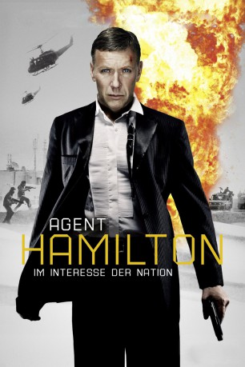
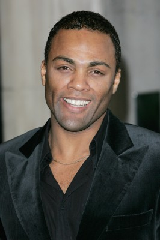

#1584 Agent Hamilton 1 - Im Interesse der Nation
 gesehen am 30.08.2016
gesehen am 30.08.2016
 
 IMDB-Wertung: 6.3 / 10
IMDB-Wertung: 6.3 / 10  Metascore: 0
Metascore: 0 
Bei seinem Undercover-Einsatz in einem Waffenschieberring deckt der schwedische Geheimagent Carl Hamilton Zusammenhänge auf, die so manchem Regierungsmitglied alles andere als lieb sind. Denn die internationale Waffenindustrie will Profit machen und dafür nutzt sie die Gier von Politikern skrupellos aus. Selbst vor Terrorangriffen wird nicht zurückgeschreckt, um lukrative Kriege zu provozieren. Seine Ermittlungen bringen Hamilton auf die Spur einer schwer bewaffneten Privatarmee mit besten Kontakten zu Regierungen und Geheimdiensten. Gleichzeitig erhält er Informationen über einen geplanten Terroranschlag auf schwedischem Boden.
Jahr: 2012
Dauer: 109 Minuten
FSK: 18
Land: Schweden Studio: Ascot Elite Home EntertainmentTonspuren:
Untertitel:
Auflösung: 1080p (1920x800) Größe: 7198 MB
Genre: Action, Thriller, Drama
Regisseur: Kathrine Windfeld
Drehbuch: Jan Guillou, Stefan Thunberg
Soundtrack: Philippe Boix-Vives, Jon Ekstrand
Darsteller:
 Mikael Persbrandt als Carl Hamilton
Mikael Persbrandt als Carl Hamilton- Saba Mubarak als Mouna Al Fathar
 Pernilla August als Sara Landhag
Pernilla August als Sara Landhag Jason Flemyng als Rob Hart
Jason Flemyng als Rob Hart- Aleksandr Nosik als Krutov
-  Ray Fearon als Benjamin Lee
 Peter Andersson als Staffan Wärnman
Peter Andersson als Staffan Wärnman Gustaf Hammarsten als Martin Lagerbäck
Gustaf Hammarsten als Martin Lagerbäck David Dencik als Tomas Tideman
David Dencik als Tomas Tideman Leo Gregory als Miller
Leo Gregory als Miller Kevin McNally als Harold Smith
Kevin McNally als Harold Smith- Cedric Proust als Tyler
- Terry Carter als Josef Bekele
- Sandra Andreis als Anna
- Jannike Grut als Journalist
- Alexandra Alegren als Receptionist
 Lennart Hjulström als DG
Lennart Hjulström als DG- Dan Ekborg als Claes Olofsson
- Fanny Risberg als Maria Solska
- Liv Mjönes als Johanna Runestam
- Joseph Beddelem als Coleman
- Peter Gardiner als Bruce
- Michael Anthony Brown als Richard Daniels
- Kristoffer Fransson als Head Waiter
- Anna Lindmarker als News Anchor
- Anders Ahlbom als Inspector Bergström
- Steffan Dozzi als Journalist
- Jakob Isberg als Journalist
- Ulf Friberg als Tomas Gayber
- Ashraf Farah als Tareq Al Ameen
- Igor Lenev als Dmitrij Odjev
- Mouayad Jouma als Chad Duad
- Enam Soubuh als Rahim's Wife
- Na'em Al-Bsharh als Samatar Rahim
- Duncan Bruining als Somalian Commander
- Mikael Karlsson als Military
- Bassam Touma als Afghan Buyer
- Maxeem Ayyad als Vladmir
- Tommy Sporrong als Säpo , uncredited
Datei: X:\2-Dilogie(A-F)\Agent Hamilton\Agent Hamilton 1 - Im Interesse der Nation (2012, FSK18, 1920x800).mkv seit 23.07.2015
Festplatte: HD Collection-2(A-Z)-3(A-M)
 Alle Filme aus Gruppe '2-Dilogie(A-F)\Agent Hamilton'
Alle Filme aus Gruppe '2-Dilogie(A-F)\Agent Hamilton'